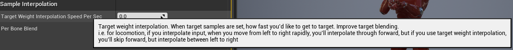
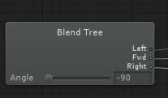
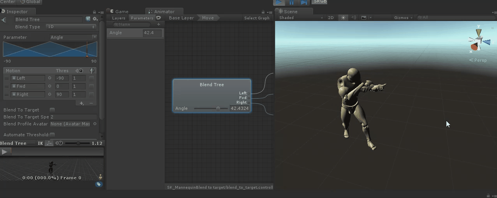
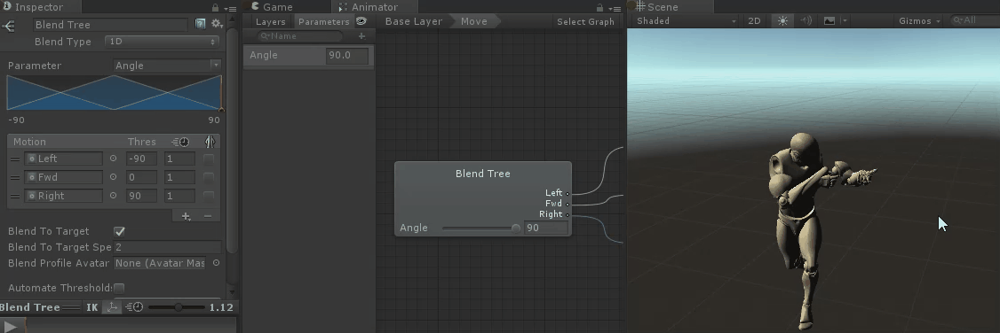
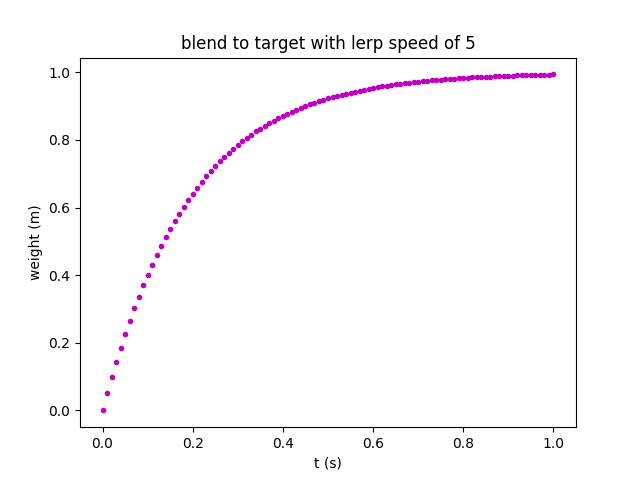

Introduction
So… blend tree in Unity is somehow rudimentary compared with blend space in UE4. And one of the most powerful feature a blend tree lacks, in my opinion, is Target Weight Interpolation:

This is a brilliant feature, especially for character locomotion. As a result, it seems necessary to implement this feature in Unity.
What Is Blend To Target?
Think about a blend tree that takes moving angle as its parameter:

If we want the character to move from left to right, we need to lerp Angle parameter value from -90 to 90. That is to say, this value will go from -90 to 0, then from 0 to 90：
As we can imagine, the weight of Fwd node is affected when the chracter move from left to right. And this always looks terrible:

This looks even worse because the character leans forward when moving forward.
In conclusion, Fwd nodes’ weight should not be affected during such a transition. And this is what Blend to target does, and it eventually looks like this:

How does it work?
Instead of blending animations by parameter value, Blend to target blends animations by sample weights directly.
When the character is moving left, the sample weights of this blend tree is (1.0, 0.0, 0.0), when the character is moving right, the sample weights is (0.0, 0.0, 1.0).
Lerp between this sample weights would be performed to get the final result:
| Progress | Left Weight | Fwd Weight | Right Weight |
|---|---|---|---|
| 0% | 1.0 | 0.0 | 0.0 |
| 25% | 0.75 | 0.0 | 0.25 |
| 75% | 0.25 | 0.0 | 0.75 |
| 100% | 0.0 | 0.0 | 1.0 |
And we can see the Fwd node is not affected now.
Interpolation Speed
What is worth mentioning is how we handle interpolation speed when a blend target is set.
Current to Target Interpolation
Personally I perfer the Current to Target method, which is also what UE4 adapts for their animation blend space.
This method has the virtue of simplicity. Because we only need to care about what the current&target weight is, and interp from current to target.
Let s be our blend speed, in a frame of delta time t, the interpolation method is:
1 | Weight_New = Lerp(Weight_Old, Weight_Target, Clamp01(t * s)); |
But the problem is that this method is not linear:

As we can see, the weight grows fast in the beginning because the value target - current is somehow large when the interpolation begins. Then the grow speed gradually decreases along with the value target - current .
Linear Interpolation
Of course what we, to be frankly, animators desire is linear interpolation. And it is not that difficult to implement, but it’s not easy to handle multi target interpolation.
In this case, blend speed s represents the time a target interpolation needs to be completed. If the target weight changes frequently, this means a lot of work to handle these transition.